Dit artikel overloopt de analyse van een concrete condensatorbatterij in een industriële elektrische installatie. Deze condensatorbatterij was in brand gevlogen, allicht te wijten aan een fenomeen dat parallelresonantie wordt genoemd. Dit schadelijk fenomeen wordt veroorzaakt door harmonische stromen in de installatie.
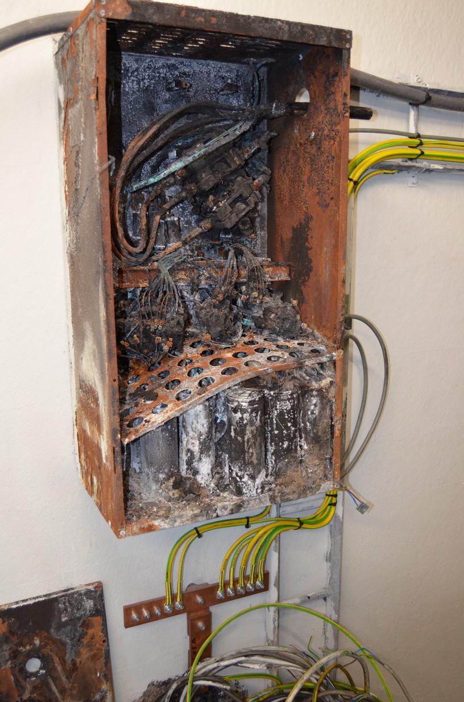
(Noot bij de foto: Bij aanvang van de gerechtelijke expertise waren al herstellingen uitgevoerd, teneinde de uitbating van het bedrijf zo snel als mogelijk te kunnen heropstarten, maar de uitgebrande condensatorbatterij te zien op de foto had men ten behoeve van de expertise nog laten hangen.)
Harmonische stromen in een installatie worden opgewekt door niet lineaire verbruikers. In het geval van een lineaire verbruiker bestaat er een lineair verband tussen de stroom door de verbruiker en de spanning over de verbruiker cf. de wet van Ohm. In het geval van een niet lineaire verbruiker is dit lineair verband er niet. Alle verbruikers waarin vermogenelektronica is geïntegreerd, zijn als niet lineair te beschouwen. Praktisch betekent dit dat deze verbruikers een periodieke stroom in de installatie veroorzaken die niet sinusvormig verloopt. Dergelijke periodieke stroom kan evenwel worden ontbonden in een reeks van meerdere sinusvormige stromen, elk met een verschillende frequentie die een veelvoud bedraagt van de fundamentele frequentie (50 Hz). Dit zijn de harmonische stromen. Harmonische stromen in een installatie kunnen gemeten worden met een power analyzer.
Een condensatorbatterij en een transformator vormen t.a.v. harmonische stromen in de installatie een parallel circuit. De impedantie van een transformator en van een condensatorbatterij zijn afhankelijk van de frequentie. De impedantie van de transformator zal groter worden met toenemende frequentie. De impedantie van een condensatorbatterij zal daarentegen kleiner worden. Om parallelresonantie te onderzoeken, moet de gecombineerde impedantie van de parallelschakeling van de transformator en de condensatorbatterij worden bepaald i.f.v. de frequentie. Er is sprake van parallelresonantie als deze gecombineerde impedantie zuiver resistief wordt. Dit is tevens de maximale impedantie van de parallelschakeling. De frequentie waarbij zich dit voordoet, wordt de resonantiefrequentie van het parallel circuit genoemd. Een theoretische toelichting over parallelresonantie, kan men hier terugvinden.
De capaciteit van de aangewende condensatoren in de condensatorbatterij bedraagt 77 µF. De nominale stroom van de condensatoren bedraagt 12,095 A. De maximaal toelaatbare effectieve stroom die de condensatoren volgens hun technische fiche continu kunnen verdragen, bedraagt 1,3x de nominale stroom, dus 15,724 A.
De condensatorbatterij is samengesteld uit 4 schakeltrappen. Afhankelijk van de gemeten arbeidsfactor (dit is de verhouding van het actief vermogen, dat wordt verbruikt door de belasting, op het schijnbaar vermogen dat de belasting opneemt) schakelt de controller van de condensatorbatterij schakeltrappen in of uit. Elke trap is een driehoekschakeling van condensatoren. De trappen 1 en 2 resp. de trappen 3 en 4 zijn identiek. Trappen 1 en 2 bezitten 1 condensator per fase. Trappen 3 en 4 bezitten 2 parallelgeschakelde condensatoren per fase. Bij een lijnspanning van 404 V beschikken de trappen 1 en 2 over een reactief vermogen van 11.844,714 VAr. De trappen 3 en 4 beschikken dan over een reactief vermogen van 23.689,428 VAr.
Op basis van het reactief vermogen van elke trap kunnen met de 4 schakeltrappen 6 verschillende, unieke schakelcombinaties worden gevormd:
| Schakelcombinatie | Reactief vermogen [VAr] |
|---|---|
| combinatie nr. 1 | 11.844,714 |
| combinatie nr. 2 | 23.689,428 |
| combinatie nr. 3 | 35.534,142 |
| combinatie nr. 4 | 47.378,856 |
| combinatie nr. 5 | 59.223,571 |
| combinatie nr. 6 | 71.068,285 |
De 6 unieke schakelcombinaties kunnen op meer dan één manier gemaakt worden:
De transformator transformeert hoogspanning van 15 kV omlaag naar 400 V (lijnspanning). Het schijnbaar vermogen dat de transformator onder nominale condities kan doorlaten, bedraagt 250 kVA. De ohmse weerstand van de transformator betrokken op diens secundaire zijde bedraagt 8,7494e-03 ohm. De reactantie bij de fundamentele frequentie (50 Hz) bedraagt 26,8336e-03 ohm. Daaruit volgt een inductiecoëfficiënt van de transformator van 8,541e-05 H.
De elektrische installatie kan in een driefasig schema worden voorgesteld:
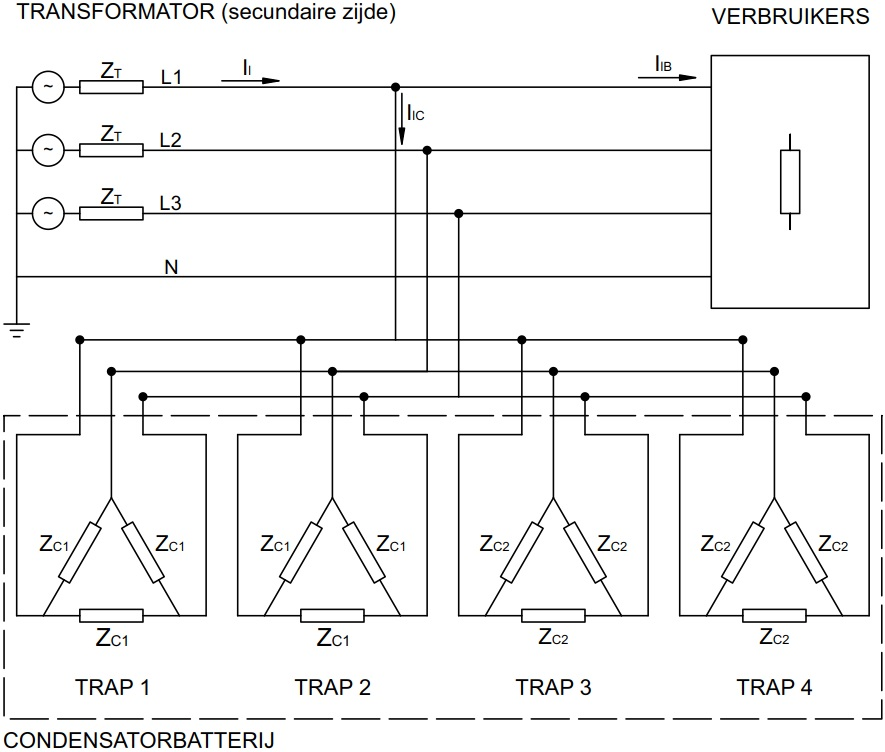
ZT is de lijnimpedantie van de transformator, ZC1 is de fase-impedantie van de schakeltrappen 1 en 2 in de condensatorbatterij en ZC2 is de fase-impedantie van de schakeltrappen 3 en 4 in de condensatorbatterij.
Dit driefasig schema kan vervolgens worden gereduceerd tot een equivalent eenfasig schema. Daartoe worden eerst de driehoekschakelingen van de schakeltrappen van de condensatorbatterij vervangen door equivalente sterschakelingen. Een sterschakeling is equivalent indien de lijnstromen naar de condensatorbatterij en het schijnbaar vermogen van de condensatorbatterij ongewijzigd blijven t.o.v. de driehoekschakeling. De equivalente sterschakeling bekomt men door de condensatorimpedanties te delen door 3 (zie hier voor meer toelichting). Men kan het driefasig schema nu beschouwen als zijnde samengesteld uit drie identieke eenfasige kringen tussen telkens één lijn (resp. L1, L2 en L3) en de neutrale geleider (N). In het eenfasig schema vloeien dezelfde lijnstromen als in het driefasig schema. Tussen de lijngeleider en de neutrale geleider staat wel de fasespanning van het net (ca. 230 V).
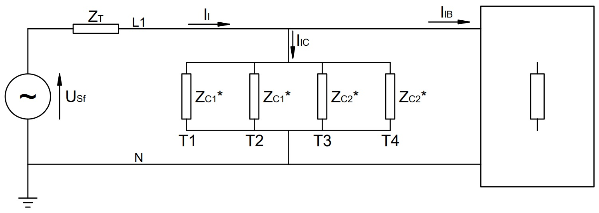
Niet-lineaire verbruikers, die harmonische stromen in het netwerk veroorzaken, kunnen in het eenfasig schema worden voorgesteld door een harmonische stroombron die een harmonische bronstroom met zekere frequentie in het netwerk injecteert. De harmonische stromen in het netwerk veroorzaken over de impedanties van het netwerk harmonische spanningen met dezelfde frequentie. Deze harmonische stromen en spanningen superponeren zich op de fundamentele stromen en spanningen in het netwerk.
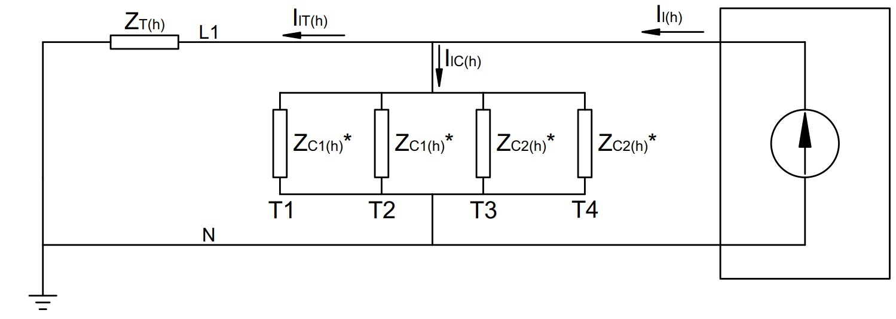
Men noteert dat de impedanties van de schakeltrappen van de condensatorbatterij en de impedantie van de transformator een parallel circuit vormen. Voor elke schakelcombinatie van de condensatorbatterij kan de impedantie van de parallelschakeling van de actieve schakelcombinatie en de transformator worden berekend. Deze gecombineerde impedantie zal tevens afhangen van de frequentie van de harmonische bronstroom die in de parallelschakeling wordt geïnjecteerd.
Deze berekeningen hebben voornamelijk tot doel na te gaan voor welke frequenties van harmonische stromen parallelresonantie kan optreden in de parallelschakeling van transformator en condensatorbatterij.
De berekeningen zijn gemaakt met Python in een Jupyter Notebook dat men hier kan inkijken. Voor elke unieke schakelcombinatie van de condensatorbatterij worden harmonische bronstromen met een effectieve waarde van 1 A in de parallelschakeling van condensatorbatterij en transformator geïnjecteerd. De geïnjecteerde harmonische stromen hebben een frequentie gaande van 50 Hz tot 1.250 Hz.
Het verloop van de impedantie van de parallelschakeling i.f.v. de frequentie van de geïnjecteerde harmonische bronstroom kan in een grafiek weergegeven worden:
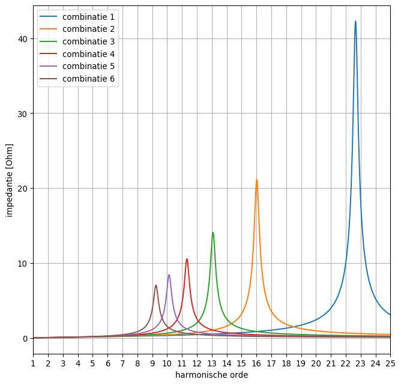
Zo kan men bv. vaststellen dat in het geval van schakelcombinatie nr. 1 van de condensatorbatterij de impedantie van de parallelschakeling met de transformator maximaal wordt rond een harmonische orde van 23. Dit stemt overeen met een frequentie van 23 x 50 Hz = 1.150 Hz. De precieze resonantiefrequentie van de parallelschakeling situeert zich volgens de berekeningen op 1.132,934 Hz. De maximale impedantie is zuiver resistief, hetgeen blijkt uit onderstaande grafiek: bij de resonantiefrequentie is het argument of de fasehoek van de impedantie 0°. Naarmate meer schakeltrappen van de condensatorbatterij worden ingeschakeld (en zodoende het reactief vermogen van de condensatorbatterij toeneemt, cf. de tabel hierboven) volgt uit de grafieken dat de resonantiefrequentie en resonantie-impedantie afnemen.
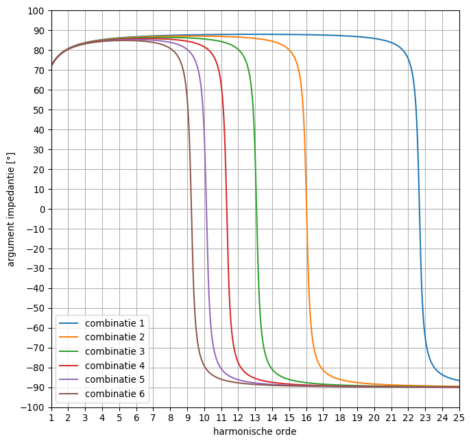
Als de impedantie van de parallelschakeling gekend is en de harmonische stroom die in de parallelschakeling wordt geïnjecteerd is ook gekend, dan kan de harmonische spanning over de parallelschakeling bepaald worden. Vervolgens is het daarmee mogelijk om de stromen door de transformator en de actieve schakeltrappen van de condensatorbatterij te berekenen. De grafiek hieronder geeft voor elke unieke schakelcombinatie van de condensatorbatterij de lijnstroom weer die door de condensatorbatterij vloeit i.f.v. de frequentie van de geïnjecteerde harmonische bronstroom (die steeds een effectieve waarde heeft van 1 A).
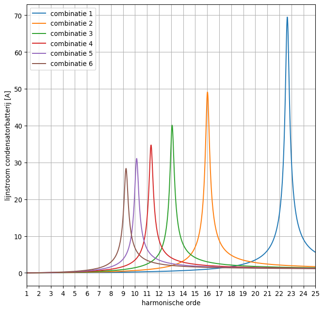
In het geval bv. schakelcombinatie nr. 1 van de condensatorbatterij actief is, zal een geïnjecteerde harmonische bronstroom van 1 A met een frequentie die gelijk is aan de resonantiefrequentie van de schakelcombinatie nr. 1 een lijnstroom door de condensatorbatterij veroorzaken die bijna 70 keer groter is.
Door de condensatoren, die in werkelijkheid in driehoek zijn geschakeld, zal evenwel de fasestroom vloeien:
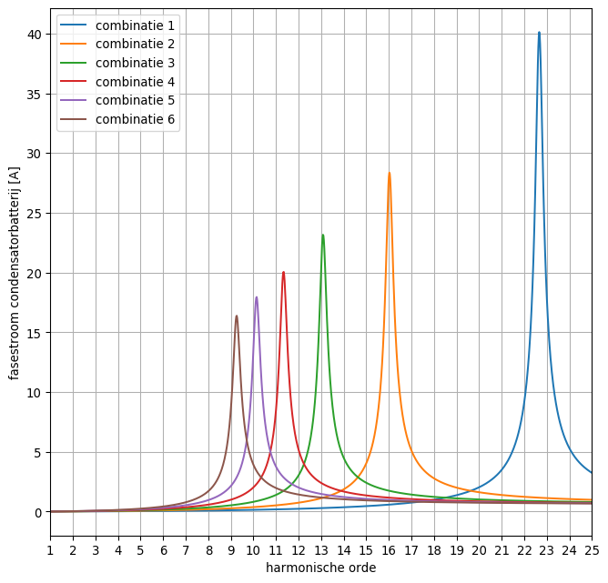
Uit de bovenstaande grafiek volgt dat een geïnjecteerde harmonische lijnstroom, waarvan de frequentie in de buurt ligt van de resonantiefrequentie van de parallelschakeling, die gevormd wordt door de transformator en een schakelcombinatie van de condensatorbatterij, aanleiding kan geven tot sterk verhoogde stromen door de condensatoren van de condensatorbatterij. Deze hoge stromen overbelasten de condensatoren, waardoor deze sterker opwarmen, vlugger verslijten en in extremis vuur kunnen vatten.
Gedurende één week werden metingen verricht t.h.v. de ingang van het algemeen laagspanningsbord (ALSB) van de installatie (stroomafwaarts van de transformator en condensatorbatterij). Daartoe werd een power analyzer FLUKE 1735 aangewend. Het meettoestel registreerde de effectieve waarde of RMS-waarde, de THD (Total Harmonic Distorsion) en het harmonisch frequentiespectrum (tot de 25ste orde of 1.250 Hz) van de drie lijnspanningen en lijnstromen in het driefasig net. De tijdsduur van elk loginterval bedroeg 2 m 23 s. Van elk loginterval schrijft het meettoestel de gemiddelde gemeten waarde, de minimum gemeten waarde en de maximum gemeten waarde weg in zijn loggeheugen met een tijdstempel. Er werden 4235 logintervallen opgeslagen gedurende de meetcampagne.
A.h.v. de gemeten RMS-waarde van de lijnstroom en de gemeten THDi kan de fundamentele component van de lijnstroom worden berekend:
Als de fundamentele component I1 van de lijnstroom is bepaald, kunnen m.b.v. het gemeten harmonisch frequentiespectrum ook de harmonische componenten van de lijnstroom worden berekend. Zo geldt voor een component van de h-de orde:
met {i_h(\% )} de gemeten spectrale component uitgedrukt in procenten van de fundamentele stroomcomponent.
Dezelfde formules zijn evenzeer van toepassing op de lijnspanning, weliswaar gebruikmakend van de gemeten RMS-waarde van de lijnspanning en de gemeten THDu. De uitkomsten zijn de fundamentele component en de harmonische componenten van de lijnspanning.
Het doel van de metingen bestond er vooreerst in om te bepalen welke stromen mogelijk door de condensatoren van de uitgebrande condensatorbatterij konden vloeien, al naargelang de actieve schakelcombinatie van de condensatorbatterij, om dan vervolgens na te kunnen gaan in welke mate deze stromen de maximaal toegelaten waarde, die de condensatoren nog kunnen verdragen, al dan niet overschrijden. Er weze hierbij opgemerkt dat schakeltrappen 3 en 4 over 2 parallelgeschakelde condensatoren per fase beschikken, zodat de toelaatbare fasestroom voor schakeltrappen 3 en 4 2x15,724 A bedraagt (in de onderstelling dat de fasestroom zich dan gelijk verdeelt over de 2 condensatoren).
De inputdata van de berekeningen zijn de gemiddelde fundamentele lijnspanning, de gemiddelde fundamentele lijnstroom en de gemiddelde harmonische lijnstroomcomponenten in elk loginterval. Op basis van de eenfasige schema's voorgesteld in par. 3 en gebruikmakend van elementaire netwerktheorie kunnen daarmee de RMS-waarden van de condensatorstromen in elk loginterval en voor elke schakelcombinatie van de condensatorbatterij worden berekend, waarna er kan nagegaan worden in welke logintervallen en voor welke schakelcombinatie van de condensatorbatterij de RMS-condensatorstromen de maximaal toelaatbare stroom overschrijden. De berekeningsalgoritmen werden in een tweetal Python-scripts geïmplementeerd (script 1 en script 2). Tevens werd daarbij ook rekening gehouden met de impedantie van de kabel tussen de condensatorbatterij en het ALSB, waar het meettoestel was geplaatst, en met de impedantie van de aansluitkabels van de schakeltrappen van de condensatorbatterij.
In Jupyter Notebook capacitor_bank_02 worden de uitkomsten geïllustreerd voor één set van inputdata (één loginterval). Voor elke mogelijke schakelcombinatie van de condensatorbatterij worden de fundamentele en harmonische stroom- en spanningscomponenten door c.q. over de condensatoren van elke schakeltrap berekend, waarna dan de RMS-waarde van de totale stroom c.q. de totale spanning kan worden bepaald.
Noteer dat enkel harmonische stroom- en spanningscomponenten met een oneven harmonische orde in de metingen voorkwamen.
Dezelfde berekeningen werden door de computer uitgevoerd voor elk loginterval in het logbestand. Na elke berekeningscyclus ging de computer na of er overschrijdingen optraden van de maximaal toelaatbare condensatorstroom. Enkel de metingen van lijn L1 zijn toegepast als inputdata voor de berekeningen en werden beperkt tot en met de 23ste harmonische orde (zijnde de resonantiefrequentie van schakelcombinatie nr. 1, tevens de hoogst mogelijke resonantiefrequentie van de parallelschakeling van transformator en condensatorbatterij). De resultaten van de computerberekeningen zijn dan verder geanalyseerd in Jupyter Notebook capacitor_bank_03. Daaruit volgt de onderstaande grafiek:
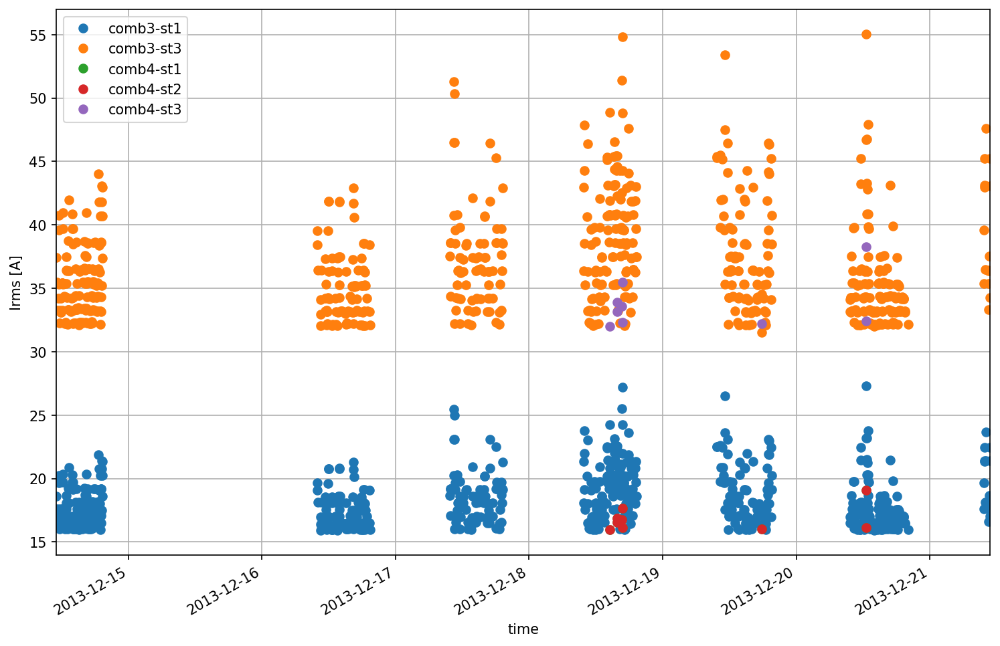
Uit deze grafiek kan opgemaakt worden dat de condensatorbatterij vooral vatbaar is voor overbelasting door parallelresonantie wanneer schakelcombinatie nr. 3 actief zou zijn. De oranje stippen duiden momenten (logintervallen) aan met een overschrijding van de maximaal toelaatbare condensatorstroom in trap 3 (2x 15,724 A). De blauwe stippen duiden momenten aan met een overschrijding in trap 1. Er komen ook enkele momenten voor met een overschrijding wanneer schakelcombinatie nr. 4 actief zou zijn (de rode en paarse stippen in de grafiek). Voor de schakelcombinaties nr. 1, nr. 2, nr. 5 en nr. 6 worden geen overschrijdingen vastgesteld.
Uit de voorgaande analyse blijkt dat voornamelijk schakelcombinatie nr. 3 van de uitgebrande condensatorbatterij kwetsbaar was.
De vraag stelt zich nu nog welke schakelcombinaties de condensatorbatterij kon innemen afhankelijk van de belasting. Om op die vraag een antwoord te zoeken, zijn met de power analyzer vermogenmetingen uitgevoerd.
De formule om het benodigd reactief vermogen van een condensatorbatterij te bepalen, luidt:
Daarin is:
{P} het driefasig actief vermogen dat de aangesloten belasting opneemt
{\phi _L} de arbeidsfactor van de aangesloten belasting
{\phi _S} de gewenste arbeidsfactor t.h.v. de netaansluiting
{Q} het benodigd driefasig reactief vermogen
Voor meer toelichting over de afleiding van deze formule: zie hier.
Onder meer het driefasig actief vermogen en de arbeidsfactor van de belasting werden gedurende één week gemeten aan de ingang van het ALSB van de installatie. Het loginterval bedroeg 2m 35s. Er werden 3.902 logintervallen opgeslagen. Van elk loginterval zijn de gemiddelde gemeten waarde gedurende het loginterval, de minimum gemeten waarde tijdens het loginterval en de maximum gemeten waarde tijdens het loginterval in het loggeheugen van het meettoestel weggeschreven.
In Jupyter Notebook capacitor_bank_04 zijn de vermogenmetingen geanalyseerd. Voor elk loginterval werd op basis van het gemeten actief vermogen en de gemeten arbeidsfactor het benodigd reactief vermogen uitgerekend dat de condensatorbatterij moet leveren om de gewenste arbeidsfactor (0,96) te bekomen. Wordt de berekening gebaseerd op de gemiddelde meetwaarden van elk loginterval, dan stelt men vast dat het benodigd reactief vermogen tijdens de meetcampagne nooit groter moest zijn dan het reactief vermogen van schakelcombinatie nr. 2 (de groene horizontale lijn in de grafiek hieronder). Bijgevolg, de kwetsbare schakelcombinatie nr. 3 zou op basis van deze resultaten nimmer hoeven ingezet te worden. Weliswaar valt het niet uit te sluiten dat een meetcampagne van slechts één week niet representatief is voor het belastingsprofiel van de installatie over een gans jaar en dat de vermogenopname en arbeidsfactor van de belasting mogelijk seizoensafhankelijk fluctueren.
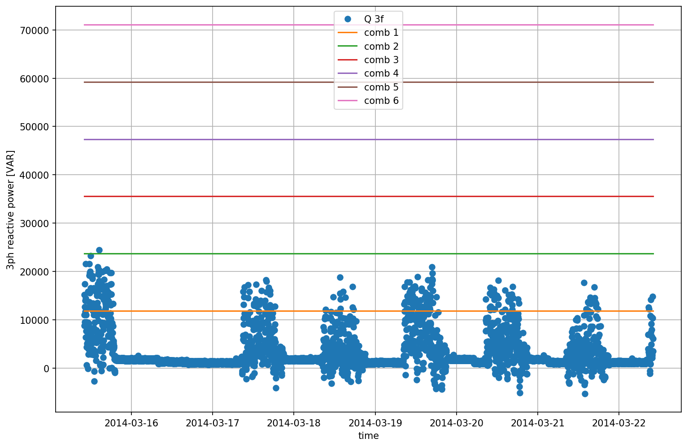
Werkt men echter met de extreme gemeten waarden in elk loginterval (maximumwaarde van het actief vermogen in een loginterval en minimumwaarde van de arbeidsfactor in een loginterval), dan bekomt men een totaal ander beeld:
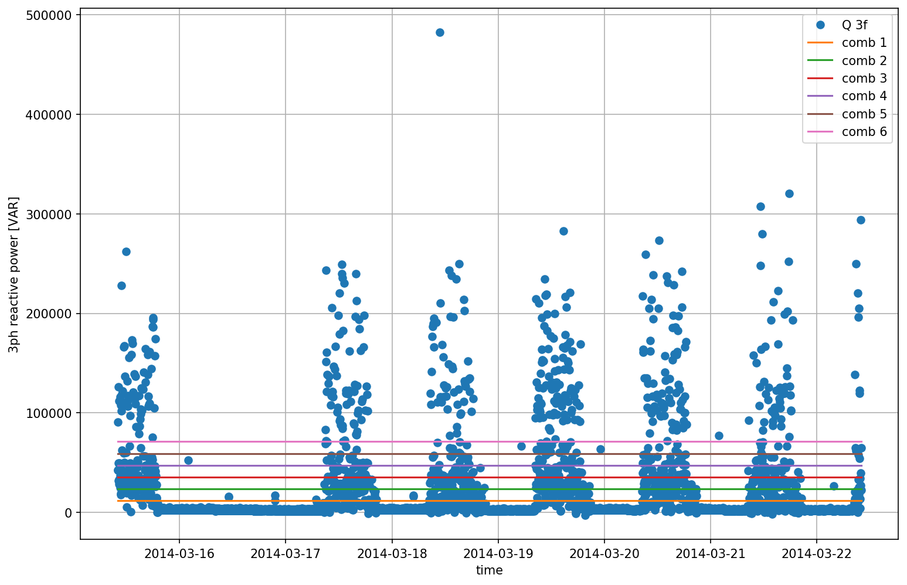
Uit deze laatste grafiek volgt dat de kwetsbare schakelcombinatie nr. 3 van de condensatorbatterij wel van tijd tot tijd ingeschakeld kan zijn. Zo blijken er 147 logintervallen voor te komen waarin schakelcombinatie nr. 3 (kortstondig) actief kan zijn geweest (benodigd reactief vermogen tussen 35.534,142 VAr en 47.378,856 VAr, zijnde de rode en paarse horizontale lijn op de grafiek).